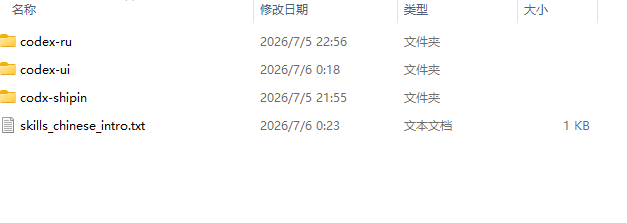
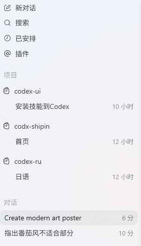
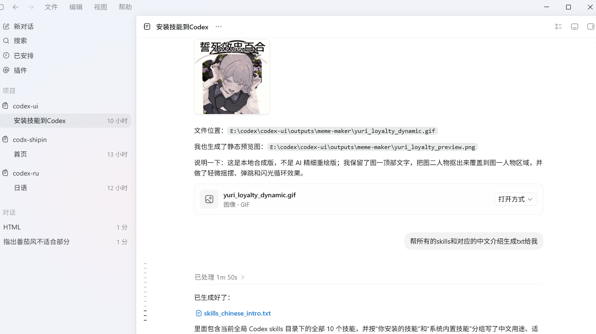
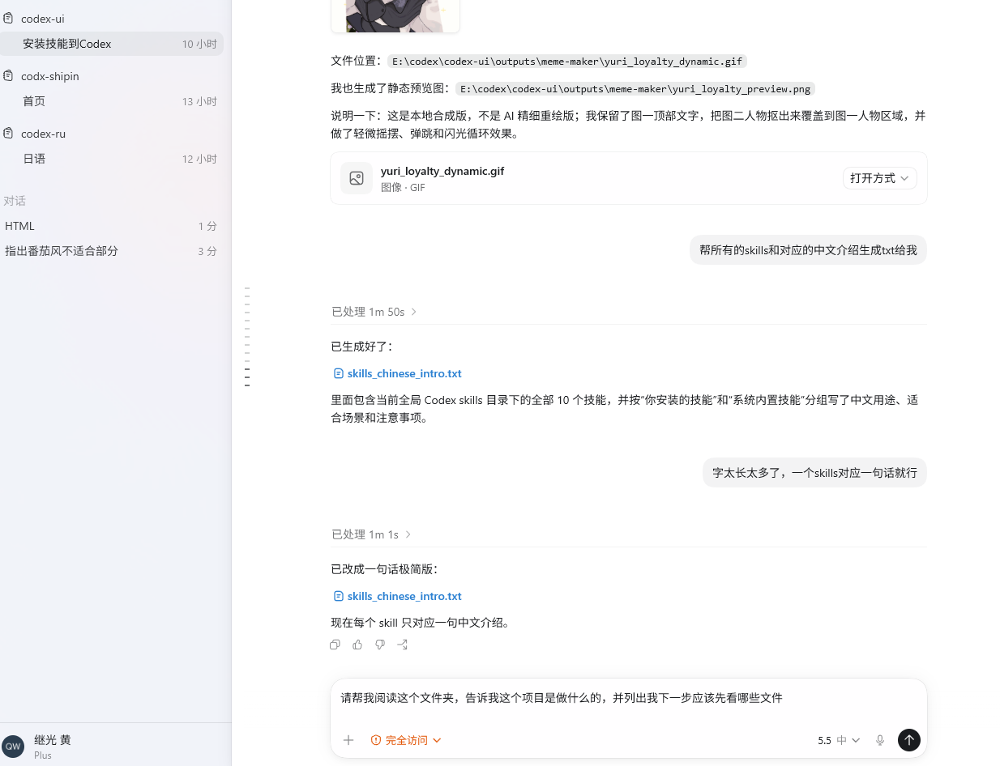
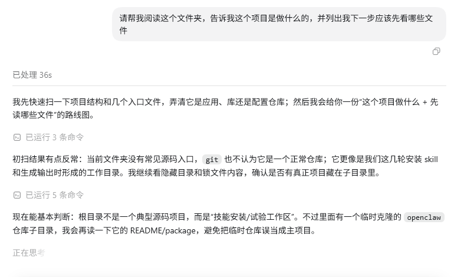
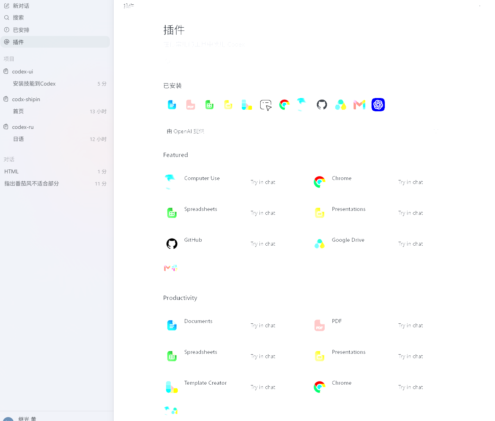

Codex Windows 桌面版
像普通软件一样打开，有侧边栏、聊天窗口和结果预览。适合不想碰命令行的用户。
查看 Windows 官方说明这是一份给中国用户看的小白教程。你不需要懂编程，只要按步骤确认账号、下载安装、登录、打开文件夹，就可以让 Codex 帮你读代码、改文件、运行检查。
Codex 需要能正常访问 OpenAI / ChatGPT 或 OpenAI API。请先查看 OpenAI 官方的支持的国家和地区。如果你所在地区不在官方支持范围内，注册、登录或使用可能受限；本页不提供任何规避限制、账号风控或服务条款的做法。
如果你是第一次接触 Codex，直接选 Windows 桌面版。
像普通软件一样打开，有侧边栏、聊天窗口和结果预览。适合不想碰命令行的用户。
查看 Windows 官方说明CLI 就是“命令行工具”。它在 PowerShell、终端或 WSL 里运行，适合已经会打开终端的人。
查看 CLI 官方说明如果你用 VS Code、Cursor、Windsurf 这类编辑器，可以把 Codex 放进编辑器里用。
查看 IDE 官方说明先准备这些，后面就不会反复卡住。
照着做即可。命令右上角可以复制。
最简单的方法是打开官方 Windows 下载地址，按系统提示安装。
如果你喜欢用命令安装，也可以在 PowerShell 里运行下面这句。
winget install Codex -s msstore桌面版够用就不用装 CLI。确实需要在终端里使用时，再打开 PowerShell 运行官方 Windows 安装命令。
powershell -ExecutionPolicy ByPass -c "irm https://chatgpt.com/codex/install.ps1 | iex"如果你已经安装 Node.js，也可以用 npm 安装官方包。
npm install -g @openai/codex如果你安装了 CLI，可以运行下面的命令。能看到版本号，就说明命令行版本已经装好。
codex --version如果你只安装桌面版，能在开始菜单打开 Codex，也算安装成功。
官方支持两种方式：ChatGPT 登录或 API Key 登录。
| 方式 | 适合谁 | 注意事项 |
|---|---|---|
| ChatGPT 登录 | 已经有 ChatGPT Plus、Pro、Business、Edu、Enterprise 等账号的人。 | Codex 会打开浏览器让你完成登录，过程中可能需要手机号/电话验证。建议使用本人可长期接收验证码的手机号，不建议使用临时、共享或第三方接码号码。Codex Cloud 需要 ChatGPT 登录。 |
| API Key 登录 | 想按 API 用量计费，或做自动化、命令行流程的人。 | 需要到 OpenAI Platform 创建 API Key，费用按 API 账户计费。 |
打开 Codex 后，按界面提示选择登录方式。小白优先选 ChatGPT 登录。若出现电话或短信验证，请使用本人可长期接收验证码的手机号；临时虚拟号或共享接码号码可能导致验证失败、账号找回困难或账号安全风险。
查看官方认证说明如果你使用命令行，可以运行登录命令，然后按浏览器提示完成。
codex login不要一上来提复杂需求，先让它做一个小任务。
先在电脑里准备一个专门给 Codex 使用的项目文件夹。项目就是一组文件，比如网页、脚本、文档、代码。



可以直接用中文，例如：
请帮我阅读这个文件夹，告诉我这个项目是做什么的，并列出我下一步应该先看哪些文件。
Codex 可能会读文件、运行命令或提出修改建议。小白建议先让它解释，再让它动手改。看到改动后，确认无误再保留。

先认识这些按钮和模式，用 Codex 会稳很多。
权限决定 Codex 能不能读文件、改文件、运行命令。新手建议先用默认权限，不要一开始就给完全访问。
计划模式会让 Codex 先理解项目、问清需求、写出执行方案，再开始动手。适合复杂任务，例如重做页面、修复多个问题、整理项目结构。
归档是把旧对话从常用列表里收起来，不等于删除。以后需要时仍可从归档或设置里找回。
自动化可以让 Codex 按时间重复检查任务，例如定时查看项目、提醒进度、跟踪某个长期问题。
在输入框里输入 /，会出现可用命令。它像快捷菜单，可以快速切换模式或查看状态。
Codex 改完文件后，不要直接相信结果。先看它改了哪些文件，再决定是否保留。
插件不是必须安装。先会基本使用，再按自己的需求添加。
在 Codex 左侧点击“插件”，浏览或搜索插件，进入详情后选择添加。安装后建议新开一个对话，再让 Codex 使用它。插件可能需要登录对应服务，请只连接你信任并有权限使用的账号。
查看官方插件说明
检查网页显示、按钮和布局，做网页时很实用。
查看仓库、Issue、Pull Request 和代码评审。
处理 Drive、Docs、Sheets、Slides，需要授权 Google 账号。
总结邮件、查找邮件、起草回复，按需安装。
扫描有权限检查的代码，初次使用可以先跳过。
独立社区整理的 Agent Skills 搜索站，可按关键词、职业、分类、创作者和 GitHub 来源发现大量第三方技能。它的独特之处是能帮你快速找到别人已经沉淀好的工作流，例如网页设计、代码审查、文档处理、数据分析等，让 Codex 从“通用助手”变得更像带工具箱的专业助手。不是 OpenAI 官方，使用前请检查来源、脚本和权限。打开网站
全部满足，就可以正常开始用了。
只放官方或可信来源，避免下载到假软件。
官方安装、使用、认证、CLI 说明。
Codex Windows 桌面版官方入口。
创建和管理 OpenAI Platform API Key。
先确认所在地区是否被官方支持。
用于管理代码改动，Codex app 的 Git 功能会用到。
很多网页项目会用到，npm 安装 CLI 也需要它。
很多脚本和数据处理项目会用到。
需要连接 GitHub 工作流时使用。
常用代码编辑器，适合查看文件和修改结果。
Codex CLI 开源仓库和安装说明。
遇到问题先看这里，很多情况不是你操作错了。
先确认你的所在地是否在 OpenAI 官方支持范围内，并检查网络是否能正常访问相关服务。本页不提供绕过地区或服务限制的方法。
Windows 可能限制脚本执行。官方文档提到常见处理方式是把执行策略调整为 RemoteSigned。修改系统策略前，请先阅读微软官方说明。
Set-ExecutionPolicy -ExecutionPolicy RemoteSigned先安装 Git。Codex 的评审和改动查看功能会用到 Git。Windows 用户也可以用官方文档里的命令安装。
winget install --id Git.Git通常说明 CLI 没安装成功，或安装后终端还没刷新。先关闭并重新打开 PowerShell，再运行 codex --version。如果仍然不行，重新执行 CLI 安装步骤。
不要。API Key 相当于你的付费钥匙。不要发到聊天、论坛、工单截图或公开仓库里。需要时只在 OpenAI 官方平台创建和管理。
本页内容按这些官方资料整理。